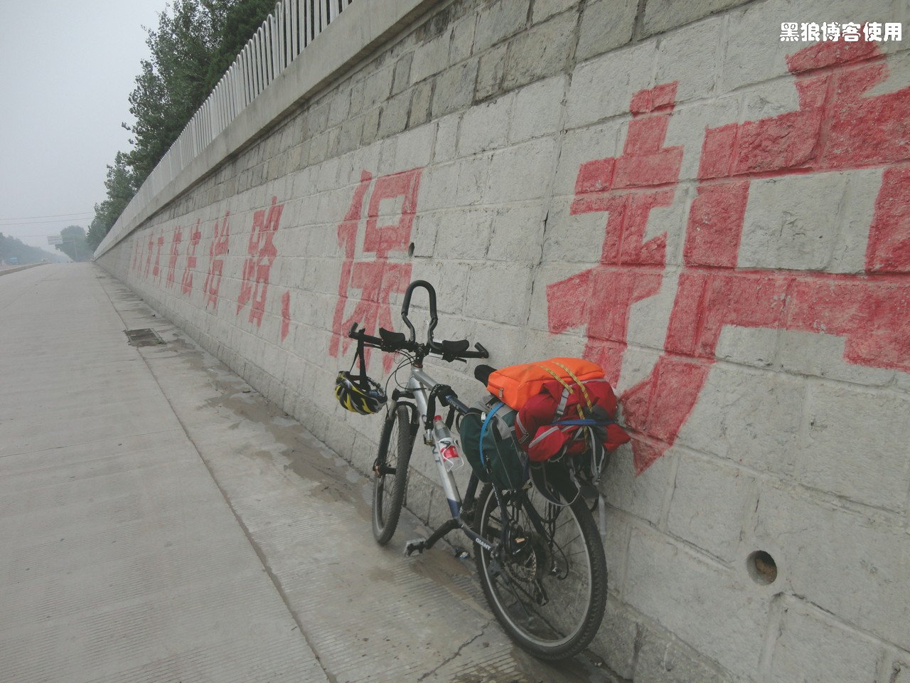
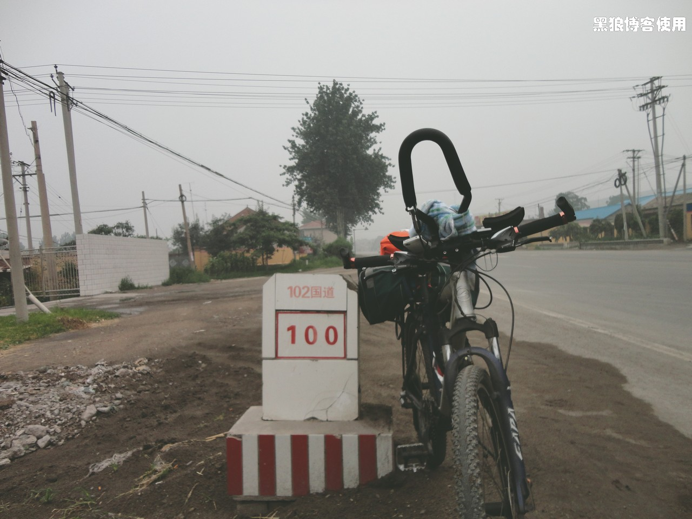

黑狼语录：
- 大家都只看到了我的疯狂，没有看到我一个人旅程中的寂寞。
- 当别人都在昏睡时，只有我还在坚持！
天气预报说今天有大暴雨，准备了各种东西，不可能因为下雨而改变。 昨天幸亏听金女侠说的落汤鸡，还有（忘了又是哪位女侠说的）密封袋，
我赶紧准备上，现在心里踏实多了。
昨天最后一次收拾要带的东西，把所有东西都装到了密封袋里面，就差把大包也装进去了，就是没有那么大的袋子。这一下，即使下雨应该也没有关系吧。
今天起了个大早，胡有理同志说在家里吃吧，结果只搞了一小碗粥，还跟我抢着喝，嘿！这家伙！临要走了，非要给我带几根黄瓜，本来包就小。最后胡有理又把我批评了，说我的装备太差不专业，居然还要为带几根黄瓜而争执。
我跟胡有理都是今天去长春，她是下午的飞机，我是早上的自行车。
预祝我成功吧！
出门后，又是给自行车打气，又是给车链子上油。耽误了点时间，准备的还是仓促。
7:50 正式出发，还是按照惯例让胡有理同志帮忙来了几张出发的照片 ( 照片在下一页 )。
今天初步体会了专业装备和非专业装备的区别。专业的自行车可能不会像我现在这样，带上重点的东西就感觉车架子有点软，感觉使点劲一晃车子就会散；专业的包可能会塞进更多的东西吧。还是让实际去检验吧，大浪淘沙，淘汰掉不实用的东西。
8:38 到了四惠桥，骑行了 20 公里，天气比较潮湿，有雾。
9:02 到了会村、杨闸环岛，刚才碰到两个骑行的哥们，去天津，一起走了 20 分钟吧，挺轻松，他们走 G103，我走G102，分手。
大家都只看到了我的疯狂，没有看到我一个人旅程中的寂寞。
刚才打了几个喷嚏，鼻涕和汗水都留下来了。

9:30 左右，到了东六环的六合桥。休息一会，今天还好，一点都不热不晒，只要不下雨，这就是最好的天气了。又群发了20 多条短信，呵呵，宣传一下，也鼓励自己一下，呵呵 ~~。
10:24 到燕郊，骑了 43 公里。速度有点慢，风有点大，比天气预报的微风大一些。

快出燕郊的时 候，才看到 G102 的标志，真不容易。本来以为这边的标志会比较多，结果一个没有。今天的目的地 丰润，还有 118 公里。刚才的两个哥们问我今天住哪里，我想了半天也没想起来，只说了个唐山北边。呵呵 ~~。
11:10 感觉又累又饿，正好路边看到了京东肉饼，吃！量还真大，牛肉饼 1斤，菜好大一盘子。正吃着，胡有理说北京开始下大雨了，哎，立马没心情吃了，草草了事，吃不了兜着走。山雨欲来风满楼哇。
11:48 继续上路，有大雨还是压力大呀。
上午天气有点凉，我是一边流鼻涕，一边流汗，一边打喷嚏。

12:20 骑行了 63 公里，到了三河市的门楼子，马路中间真是气派。

雾越来越大了，潮气也越来越浓了，希望在暴雨之前抵达丰润。
12:45 离丰润还有 98 公里
13:53 刚才又碰到了两个骑行的哥们，从三河市开始一起骑行，速度很快，路不同，又分手了，我的速度也下来了。现在共骑行了 87 公里。
15:05 到了天津蓟县，在一个桥下，有点累，休息一会儿。对了，看见那个雄壮、雄伟、雄武的车头了吗？呵呵~，有点作用。

15:25 骑行了 109 公里，到了河北玉田界唐山界。

15:35 到了 G102 的 99 公里处，本来想拍个照片，结果 3 米附近都是水，并且那个石碑被泥浆给遮盖住了，算了，到 100 公里处再拍照吧。
这里感觉到处都是可以交罚款的地方。
15:40 到了 G102 的 100 公里处，骑行了 112 公里，看来是从北京三环开始计数的。
16:04 骑行了 120 公里，离丰润还有 50 公里。
16:35 到了河北玉田县，还有 40 公里吧，天上有点零星雨点，两难选择，一是住在这里，另一个就是继续前进。本来想找个旅馆，没找到快捷酒店，有几个洗浴的旅馆，算了，继续前进吧。风比较大，这也是打击我的一个原因。
16:50 骑行了 132 公里。喝了点水，吃了点中午打包的牛肉饼，雨点又追上来了。急忙收拾东西，飞奔了 3 分钟后，又没有雨了。
一直在和大雨赛跑，离丰润还有 10 公里了。刚才胡有理打来电话，说雨太大飞机不能起飞了。哇，如果明天不能起飞，我可能到山海关了，如果 7、8 天
不能起飞，那我就成了第一个比飞机还快的骑自行车者了。
18:58 在骑行 167 公里后，终于到达了丰润的中心地带。正面的胳膊上、裤子上、衣服上，都是出了汗后，沾上的一层土，我都担心待会儿被宾馆拒住。终于赶到了暴风雨之前，来到了丰润，还是要相信自己的体力和速度，尽管风很大速度很慢。
现在的感觉上屁股有点不适，左手比较疼。待会养精蓄锐，准备明天的行程。宾馆住下后，总里程 170 公里。